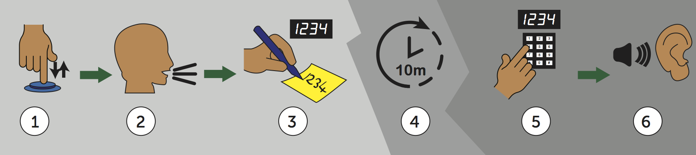
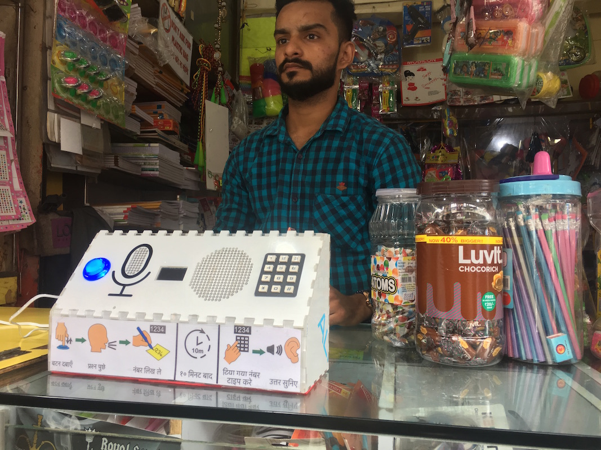

StreetWise
StreetWise is a human-powered smart speaker system for use in public emergent-user settings. After asking a question, the user receives a code, which can be entered after 10 minutes to receive a human answer.Overview
Human-driven question answering systems have been deployed by digital service providers for many years. Take for example, text-based approaches such as online forums or Q&A boards, as well as audio-based services such as Question Box, Google Neighbourly or IVR systems like the Spoken Web. While machine powered smart-speakers are rapidly increasing in popularity and reach, it is the value and richness of human-curated question responses that inspired us to develop StreetWise; a people-powered question and answer system for use in public emergent user settings. There are two elements to the StreetWise design: the local installation (with which the users interact), and the cloud-based back-end (which provides crowd-sourced answers).Try it
StreetWise's hardware specifications, code and accompanying app are available on GitHub.
All aspects of StreetWise are open-source, licensed under Apache 2.0
User Interaction

The StreetWise human-powered public smart speaker. To use, first push and release the device’s button (1), and ask a question (2). The system then speaks to confirm the question and displays a 4-digit code which the user either remembers or writes down (3). After a short delay of 10 minutes (4) the user can return to the machine and enter their 4-digit code (5). The machine then plays the human-curated response to their original question.

Additional Resources
- Documentation flyer
- Revisiting “Hole in the Wall Computing”: Private Smart Speakers and Public Slum Settings. S. Robinson, J. Pearson, Shashank Ahire, Rini Ahirwar, Bhakti Bhikne, Nimish Maravi, M. Jones, published in Proceedings of CHI 2018 (Paper 498)
- StreetWise: Smart Speakers vs Human Help in Public Slum Settings. J. Pearson, S. Robinson, T. Reitmaier, M. Jones, S. Ahire, A. Joshi, D. Sahoo, N. Maravi, B. Bhikne, published in Proceedings of CHI 2019 (Paper No. 96)